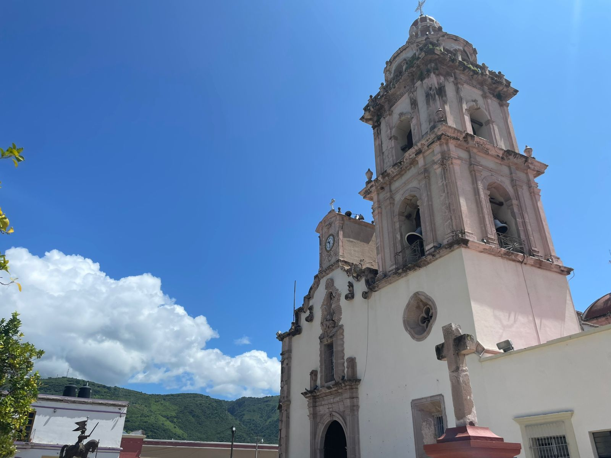

Fiesta Patronal
La celebración de Santiago Apóstol llena las calles de color y tradición con cabalgatas, música y danzas que honran nuestras raíces.
Donde la historia ancestral se encuentra con la tradición culinaria en el corazón de Nayarit
Explora ahoraDescubre los sabores auténticos de Ixtlán del Río, donde cada platillo cuenta una historia de tradición y pasión culinaria.
Sumérgete en la riqueza cultural de Ixtlán del Río, donde las tradiciones ancestrales cobran vida en cada festividad y artesanía.
La celebración de Santiago Apóstol llena las calles de color y tradición con cabalgatas, música y danzas que honran nuestras raíces.
Una representación ancestral que conecta con nuestras raíces prehispánicas, donde el ritual y la naturaleza se encuentran.
El arte del barro cobra vida en las manos expertas de nuestros artesanos, creando piezas únicas que reflejan nuestra identidad.
Explora los tesoros arqueológicos, paisajes naturales y sitios históricos que hacen de Ixtlán del Río un destino único.
Único sitio en Nayarit con uno de los pocos templos circulares de Mesoamérica.
Mirador que ofrece una vista panorámica inigualable de Ixtlán y sus alrededores.
Ideal para actividades acuáticas, pesca deportiva y relajación en familia.
Mantente al día con las últimas noticias, eventos y acontecimientos de Ixtlán del Río.
Cargando novedades...
Únete a la comunidad empresarial de Ixtlán del Río y haz que tu negocio sea descubierto por locales y visitantes.
Perfecto para comenzar
Máxima visibilidad
Apasionados por ayudarte a cultivar. Encuentra las mejores plantas, árboles, suculentas y recibe consejos de expertos para que tu jardín prospere.
ENVIOS DE USA A MEXICO, Confianza y Garantia, Somos tu mejor opcion.
Especialistas en comida tradicional nayarita. Prueba nuestro famoso pollo a la picha y birria de chivo.
📍 Calle Hidalgo #123, Centro
📞 (324) 123-4567
¡Tu Voz es Importante!
Ayúdanos a mejorar compartiendo tus ideas, correcciones o sugerencias sobre Ixtlán del Río.